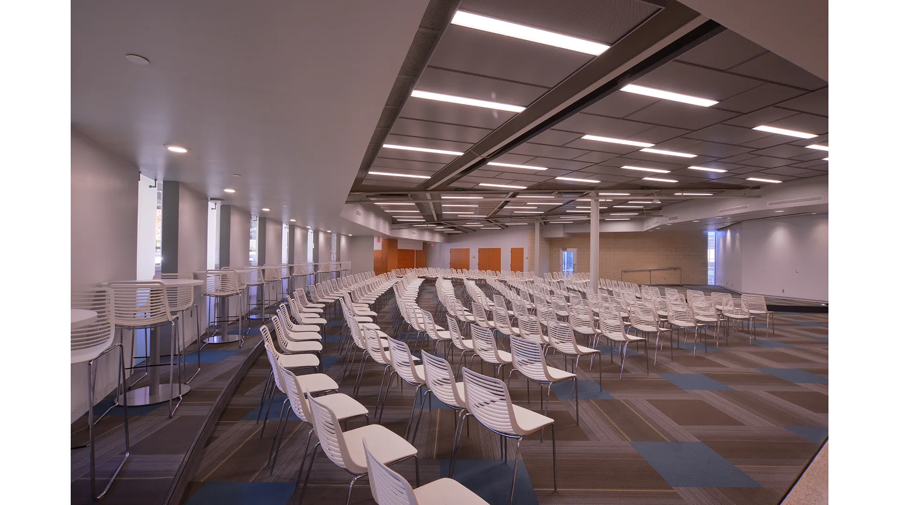
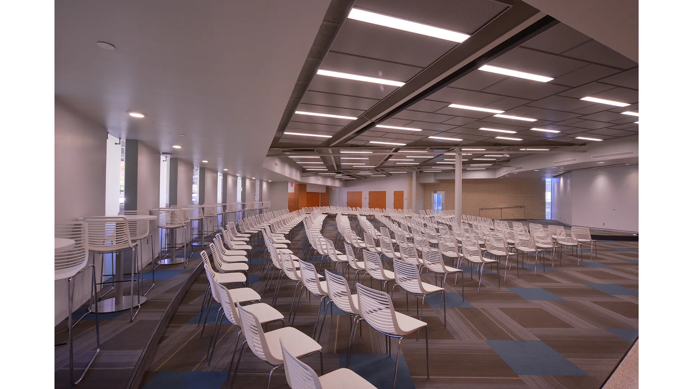

Young-Mauldin Cafeteria Renovations
The new cafeteria renovation adaptively-reuses an iconic mid-century modern building by respectfully preserving, restoring, and enhancing its exterior, while creating an interior that dramatically improves its efficiency, sustainability, and functionality as a 21st century university dining facility.
Though functional issues necessitated removal of much of the original building plan, the wonderfully-repetitive concentric rows of steel columns and radiating roof beams remained and were celebrated. The kitchen function was pushed back from plan center, allowing a food court below the dome. At the original kitchen footprint, a web of structural members within the dome braced the building and supported a mechanical mezzanine, concealed by the kitchen ceiling. These beams were exposed when the mechanical system was redesigned to floor level installations and were enlivened by a compressed ceiling over the original kitchen area – now the “food court” – and large vertical voids that extended to the underside of the dome’s roof deck were carved, “slicing” through the steel elements, resulting in a critical focal point within the original disorienting circular plan. Attic beams, columns, and these ceiling voids, are washed in light through a large skylight at the dome’s top, replacing an original kitchen exhaust. An original asbestos panel screen surrounding this exhaust was re-imagined as a stainless-steel armature with acrylic panels that were backlit with school colors.
To improve day-lighting in the large, dark seating areas, two interior courtyards were introduced. These small courtyards, concealed from the exterior, serve as large lightwells to the more interior plan, providing transparency, layering, and programmatically-required exterior dining that alleviated the need for walled exterior appendages that would detract from the purity of the original form. Dining rooms and a new 275-seat multipurpose room, with concessions, cluster around these courtyards.

 
